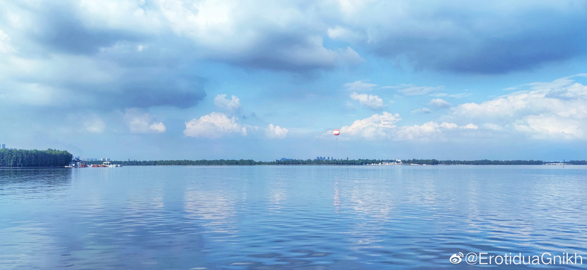

晚安
在武汉的最后-1天。
严重怀疑碰上五十年一遇洪灾滞留武汉的原因是，昨天在毕业晚会发了个逆大天的“武汉，我真的好喜欢你啊，为了你，我要延毕！”
不过阴差阳错，这样就可以亲手把礼物给wcy了。
很奇妙。
钥匙扣送完了，好朋友都基本说过再见了，那也没什么好后悔的了。其实之前还有个很大胆的想法，就是对一些让我一直压抑了很久不爽的人说“你这样让我很不愉快”，想想还是算了，无语留给我自己吧。
不知道23号韶关的洪水能不能退，20号收到防汛短信的时候还没想到会这么严重。韶钢地势高，我家那个区的地势还是高中之高，在记忆力就没遇到过内涝，结果没想到出去的路能通通堵死，又是塌方又是看海，我都怀疑是佛祖显灵了特意让我和佛祖见一面设的局。
山旮旯的洪水在网上真的掀不起一点波澜，明明都严重到这种程度了。这下能体会到之前各种小城市疫情在微博求关注的人民的心情了。也许这就是一二线城市的特权吧，唉。不知道韶钢的物资还能不能顺畅进出。
补一张今天的东湖。四年前来武汉第一天就来的听涛，今天又去了一次。从哪里开始就从哪里结束吧。
在武汉的最后-1天。
严重怀疑碰上五十年一遇洪灾滞留武汉的原因是，昨天在毕业晚会发了个逆大天的“武汉，我真的好喜欢你啊，为了你，我要延毕！”
不过阴差阳错，这样就可以亲手把礼物给wcy了。
很奇妙。
钥匙扣送完了，好朋友都基本说过再见了，那也没什么好后悔的了。其实之前还有个很大胆的想法，就是对一些让我一直压抑了很久不爽的人说“你这样让我很不愉快”，想想还是算了，无语留给我自己吧
不知道23号韶关的洪水能不能退，20号收到防汛短信的时候还没想到会这么严重。韶钢地势高，我家那个区的地势还是高中之高，在记忆力就没遇到过内涝，结果没想到出去的路能通通堵死，又是塌方又是看海，我都怀疑是佛祖显灵了特意让我和佛祖见一面设的局。
山旮旯的洪水在网上真的掀不起一点波澜，明明都严重到这种程度了。这下能体会到之前各种小城市疫情在微博求关注的人民的心情了。也许这就是一二线城市的特权吧，唉。不知道韶钢的物资还能不能顺畅进出。
补一张今天的东湖。四年前来武汉第一天就来的听涛，今天又去了一次。从哪里开始就从哪里结束吧。
- 